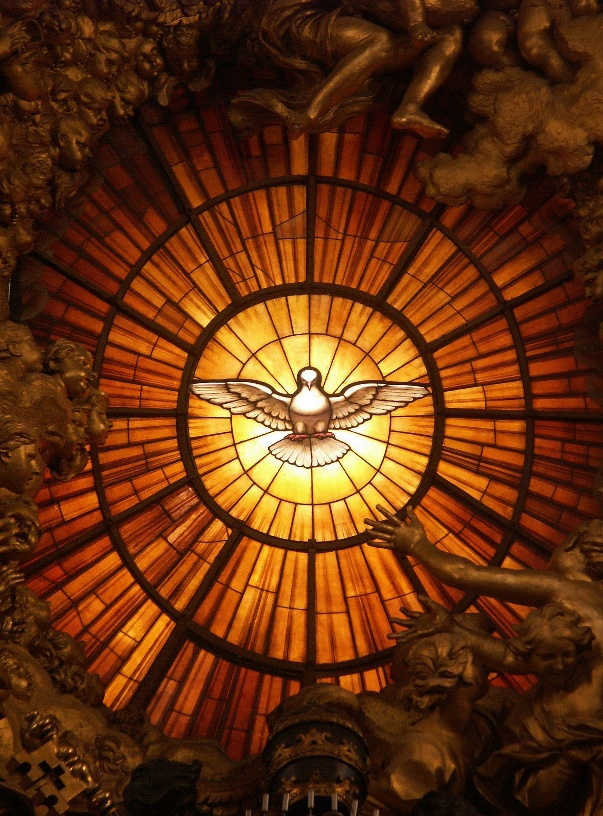
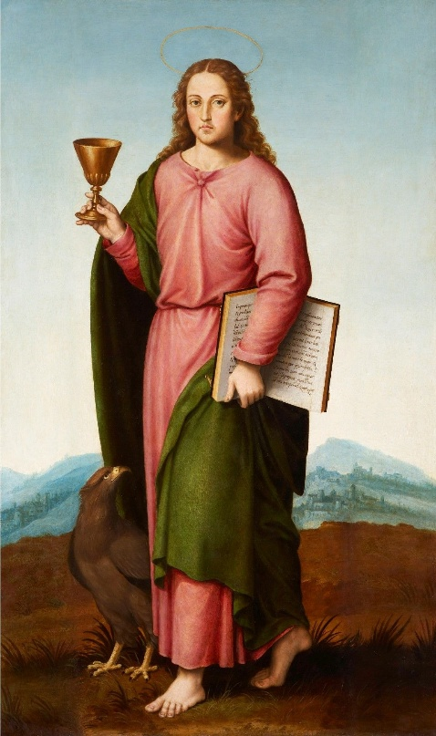
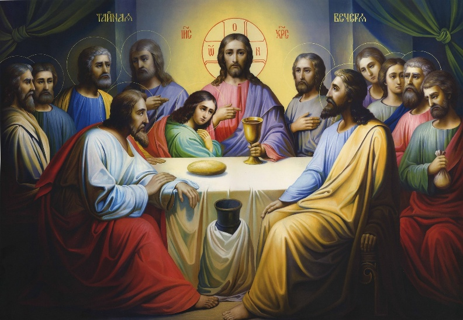
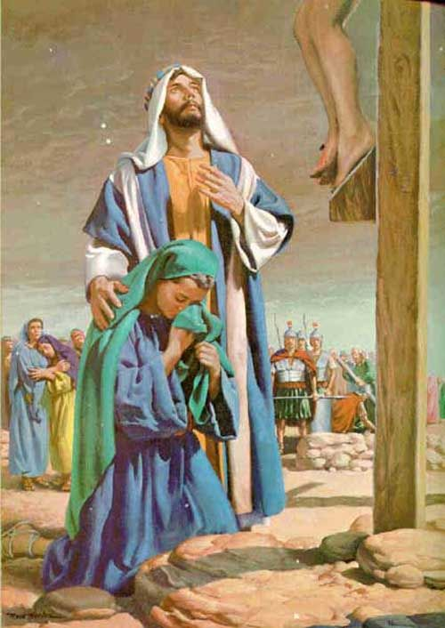
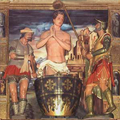

A TALK ON THE APOSTLE JOHN
“We love because He first loved us.”
1 JOHN 4:19
INTRODUCTION
FAMILY
Son of Zebedee and Salome, brother of James
TRADE
A Galilean fisherman, called from his nets (Mark 1:19–20)
NICKNAME
“Son of Thunder”, Boanerges (Mark 3:17)
INNER CIRCLE
With Peter and James at the Transfiguration and in Gethsemane
WRITINGS
A Gospel, three letters and the Book of Revelation


METAPHOR 1 · HEAD ON HIS CHEST
“One of his disciples, whom Jesus loved, was reclining at table at Jesus’ side.”
JOHN 13:23
METAPHOR 2 · A NAME MADE OF LOVE
Instead, he calls himself “the disciple whom Jesus loved”, five times.
JOHN 13:23 · 19:26 · 20:2 · 21:7 · 21:20
ASK YOURSELF
METAPHOR 3 · THUNDER TURNED TO LOVE
THEN
“Lord, do you want us to tell fire to come down from heaven and consume them?”
LUKE 9:54
YEARS LATER
“Beloved, let us love one another, for love is from God.”
1 JOHN 4:7
God’s love took the same fire and turned it toward people.

METAPHOR 4 · THE ONE WHO STAYED
“Woman, behold, your son!” … “Behold, your mother!”
JOHN 19:26–27
To the one who stays close, Jesus entrusts what is most precious to Him.
WHERE WE SEE OURSELVES
He simply lived as someone who was loved. That title is an invitation for every one of us: you, too, are the disciple whom Jesus loves.
THE MAN THEY COULDN’T KILL

01 · ROME, UNDER EMPEROR DOMITIAN
He was thrown into a cauldron of boiling oil and came out unharmed.
02 · THE POISONED CUP
He was given poison to drink. He blessed the cup, drank, and lived. That is why art shows him with a chalice.
According to early church tradition: Tertullian (c. AD 200) records the boiling oil; the poisoned cup comes from later Christian legend.
WHEN DEATH COULDN’T TAKE HIM
01
ROME
Thrown into the cauldron, and unharmed.
02
PATMOS
Banished to a rocky island “on account of the word of God” (Rev 1:9).
03
PATMOS
In exile he receives the vision that closes the Bible.
04
EPHESUS · c. AD 100
Freed, he returns to Ephesus and dies in peace, an old man.
1
apostle who, by tradition, died of old age
GOD KEPT HIM
| Apostle | What tradition says |
|---|---|
| Peter | Crucified in Rome |
| James | Killed by the sword (Acts 12:2) |
| Andrew | Crucified in Greece |
| Thomas | Martyred in India |
| John | Died in peace, in old age, at Ephesus |
“If it is my will that he remain until I come, what is that to you?” (John 21:22)
FINAL REFLECTION
In his old age at Ephesus, this was the only sermon John still preached. Asked why, he answered: “It is the Lord’s command, and if this alone is done, it is enough.” (St. Jerome)
Rest near His heart, as at the Last Supper.
Be found at the cross when others walk away.
Let His love define you more than your name.
THANK YOU · GOD BLESS YOU